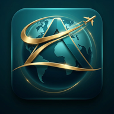

إدارة وبوابة الموظفين
PILLARS OF THE WORLD
مرحباً بك في نظام إدارة الموظفين اختر البوابة المناسبة للمتابعة
إدارة الموظفين
إضافة الموظفين وإرسال الدعوات، إدارة الحسابات والصلاحيات، ومتابعة حالة الموظفين.
بوابة الموظف
الدخول إلى الحساب الشخصي، متابعة المهام والأقسام المتاحة، واستخدام أدوات العمل.